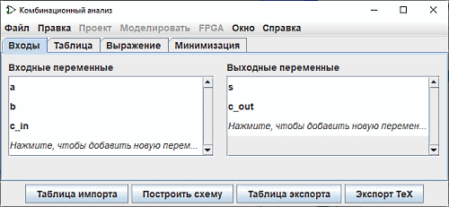
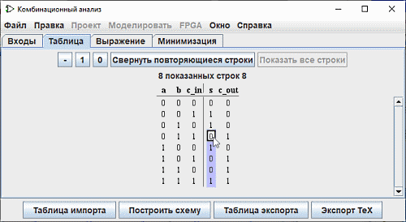

Редактирование таблицы истинности
При открытии окна Комбинационный анализ вы увидите, что оно состоит из четырех вкладок.
В этом документе представлена справка по первым двум вкладкам: Входы и выходы и Таблица. В остальной части руководства вы найдете описание двух других вкладок: Выражение и Минимизация.Вкладки Входы и Выходы

На вкладке Входы и выходы можно отображать и редактировать списки входов и/или выходов, а также задавать ширину их данных.
Чтобы добавить элементы в список, просто выберите строку со стрелкой Стрелка вверх или Стрелка вниз или нажмите кнопку "Щелкните для..." и введите нужное имя. На рисунке выше видна вставленная в список выходов строка "c_out". Затем с помощью мыши можно определить ширину данных этой строки (справа). Клавиша Enter или Tab завершит ввод.
Чтобы удалить строку, выделите ее, как и прежде, с помощью мыши или клавиш со Стрелка Вверх или Стрелка Вниз, а затем используйте клавишу Удалить.
Чтобы изменить порядок строк, выберите его, как указано выше, затем используйте комбинацию Ctrl+стрелка вверх или Ctrl+стрелка вниз, чтобы переместить его вверх или вниз по списку.
Все действия отражаются на таблице истинности немедленно.
Вкладка Таблица
Единственный элемент на вкладке Таблица - это текущая таблица истинности, изображённая в привычном виде: входы составляют столбцы слева, а выходы составляют столбцы справа.

Вы можете изменить текущие значения в выходных столбцах, нажав на интересующее вас значение и используя клавиши клавиатуры 0,1 и - (представляющие собой неопределенное значение) или кнопки - , 1 , 0 в верхней части таблицы. После ввода значения курсор перемещается вниз на одну строку в столбце. Для перемещения выбора используются комбинации клавиш стрелка вверх/вниз или стрелка левая/вправо.
Точно так же можно изменять данные во входных столбцах, вставляя неопределенные значения (-) или удалять их и заменять на 0 или 1. Как мы увидим на следующей странице, неопределенное значение позволяет с определенной гибкостью выстраивать минимальные выражения.
В этом контексте кнопка Свернуть повторяющиеся строки позволяет упростить представление таблицы и Показать все строки, чтобы представить их целиком.вы можете копировать и вставлять значения, используя буфер обмена. Буфер может быть перенесён в любое другое приложение, поддерживающее текст, разделённый символами табуляции (например, в электронную таблицу).
Если таблица истинности основана на существующей схеме, то вы можете увидеть несколько красная квадратов на столбцах с выходами с "E" в них. Они соответствуют ошибкам, которые произошли при расчёте значения для этой строки - либо схема возбуждается, либо на выходе было значение ошибки (которое отображается в виде красного провода на схеме Logisim)Далее: Создание выражений.